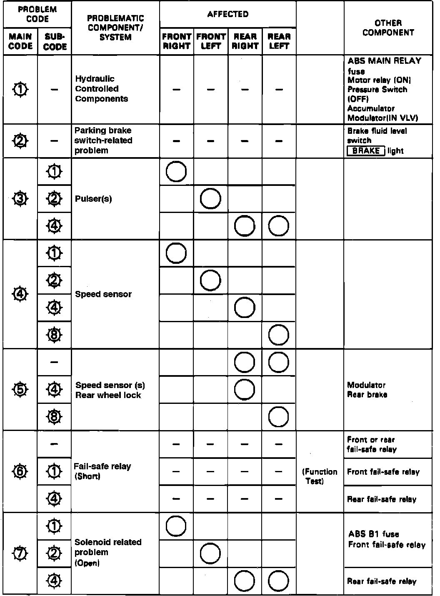

DTC List - Antilock Brake System
Refer to Diagrams / Electrical for wiring circuits, Fig. 19, for trouble codes and DIAGNOSTIC CHARTS.Fig. 19 Trouble Code Chart:

Trouble Code 2
1. If parking brake has been released, the following items are possible causes. If they are satisfactory, check control unit connections. If not loose or disconnected, substitute good control unit and recheck:
a. Parking brake is applied for more than 30 seconds while driving.
b. Brake fluid level in master cylinder is low.
c. Green/red lead is shorted between brake warning light and parking brake switch.
d. Green/red lead is shorted between brake warning light and brake fluid level switch.
e. Brake warning light is blown.
f. Green/red lead is shorted between brake warning light and parking brake.
g. Green/red lead is shorted between parking brake and control unit.